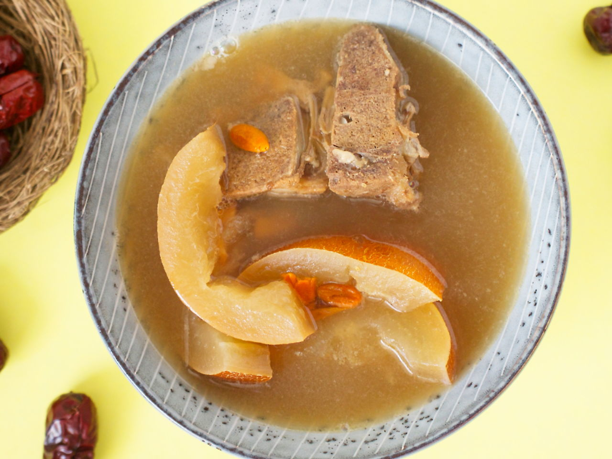

Back to Main Page
Old Cucumber Soup

Description
Old Cucumber Soup is a damn nice slow cooked Cantonese soup, where the
cucumber turns really soft and has a creamy texture to it.
The health benefits of 'lau huang gua tang' as known to the Chinese community
are abundant. Contains high dietary fiber, iron, calcium and is said to even have
anti-aging properties.
Super simple to make.
Ingredients
Serves: 4 servings.
- 250g pork bones
- 6g ginger
- 300ml water
- 8 scallops (dried)
- 1 old cucumber
- 3 oysters (dried)
- 4 red dates
- 2l water
- 1 tablespoon goji berries
Steps:
If you have a slow cooker, definitely use one. It is reccomended to boil the
soup over 6-8 hours on low heat to allow the igredients to slowly release
their nutrients.
- Bring a pot of water to boil. Add ginger and pork bones.
Allow water to boil again before removing the bones.
- Add water, old cucumber (seeds removed),
red dates (seeds removed), goji berries, dried scallops and
dried oysters into a clean pot. Bring to boil. Then, reduce
heat to the minimum and let it simmer for at least 1.5 hours
before serving.